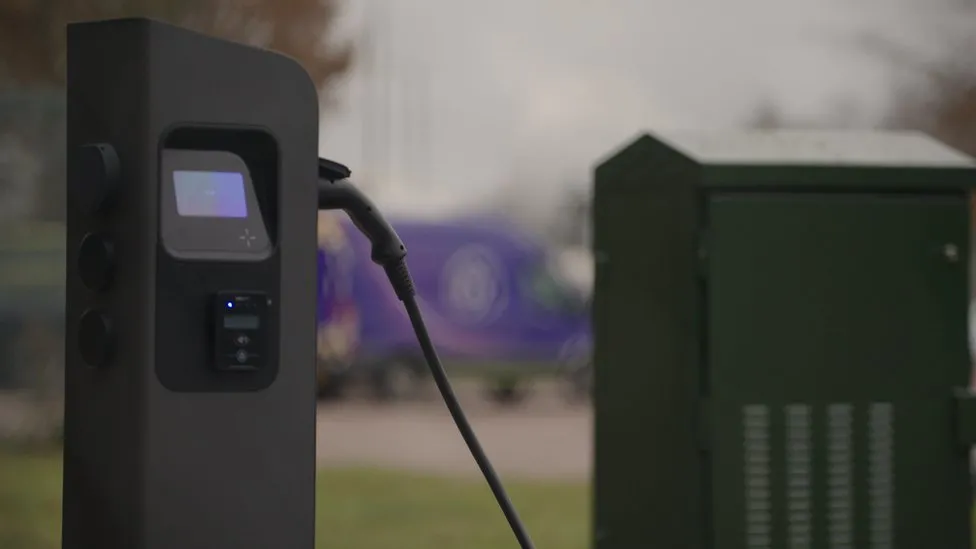

Old green street cabinets will be converted into electric vehicle (EV) charging points, according to BT Group.
The metal cabinets are traditionally used to store broadband and phone cabling, but many are coming towards the end of their lifespans. The first converted cabinet will be installed in Scotland within weeks, under a pilot programme. BT hopes up to 60,000 could be converted, which would help tackle a shortfall in electric car chargers. The government's ambition is to increase the number of charging points from more than 50,000 today to 300,000 by 2030 but Zapmap figures show nearly a third of all UK charging points are currently in London. People have complained about the lack of charging ports in some areas and that some do not work or are unreliable. This pilot project by BT will explore how this solution could be scaled up to address the lack of chargers on UK roads, something that motoring groups have said is holding back Britain's electric car revolution.
'Repurposing'
Both cabinets that are still providing broadband to individual households and those that have been decommissioned are able to be used to support the new EV charging points. Currently, the boxes contain old technology which will soon be defunct because of the nationwide rollout of full fibre broadband connections. Engineers will be able to retrofit the cabinets with a device that enables renewable energy to be shared to a charge point alongside the existing broadband service with no need to create a new connection, because they are already connected to a power source. The green lockers that are set to be decommissioned will have one charge point per cabinet, which provides two charging sockets. They also have a battery backup so existing broadband services should not be be disrupted during installation. As the boxes become decommissioned, more charging points can be added. The first location will be in East Lothian, with further pilots to roll out across the UK in the coming months.
An example of an EV charger from a green cabinet
Tom Guy, CEO of Etc., the start-up and digital incubation arm at BT Group, said that this solution was a "huge step" in addressing the barriers customers face. "Working closely with local councils in Scotland and more widely across the UK, we are at a critical stage of our journey in tackling a very real customer problem that sits at the heart of our wider purpose to connect for good," he said. Stuart Masson from automotive website The Car Expert welcomed the initiative. "Harnessing existing street furniture is a great way to increase the number of public EV charging points without further adding to clutter along our footpaths," he said. "Making this even more valuable, many of these green street cabinets are located in residential areas across the UK, including smaller villages and towns, where charging infrastructure is most severely lacking." The Department for Transport told the BBC that they have committed "hundreds of millions of pounds to expand local charging across England." Their spokesperson said: "The number of public charge points is rising across the country - increasing by 44% since December 2022. "We expect the private sector to deliver the majority of charge points and welcome initiatives such as this." BT is making the announcement at an international tech trade show in Las Vegas. The initiative has been awarded an innovation accolade for outstanding design and engineering at the Consumer Electronics Show.